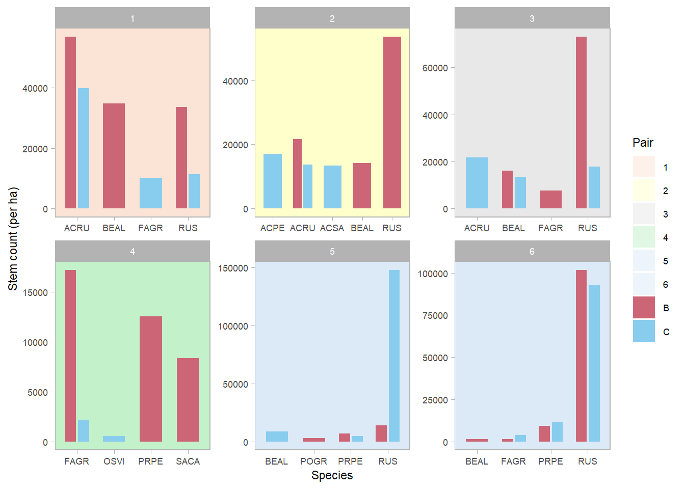
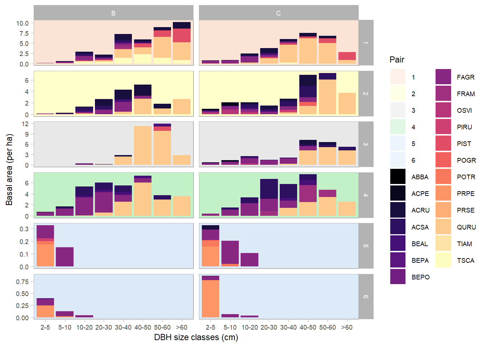
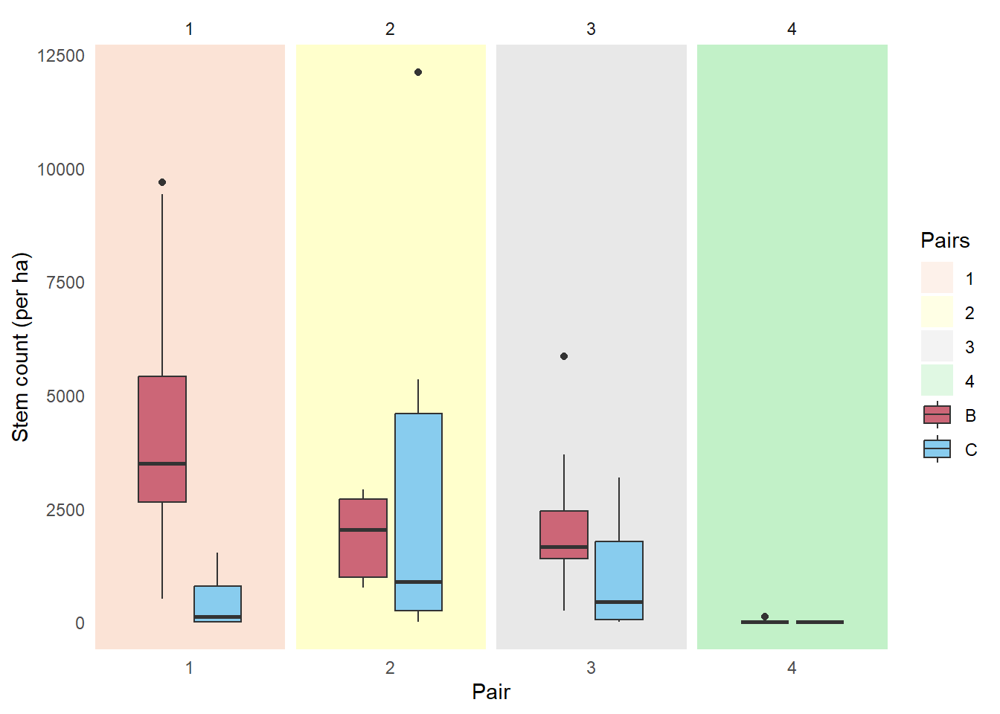
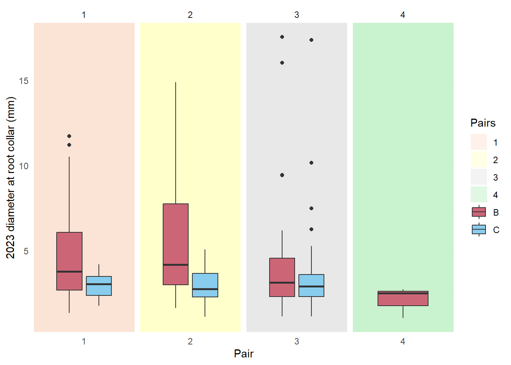
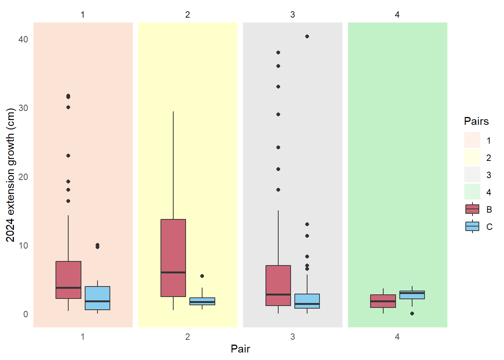
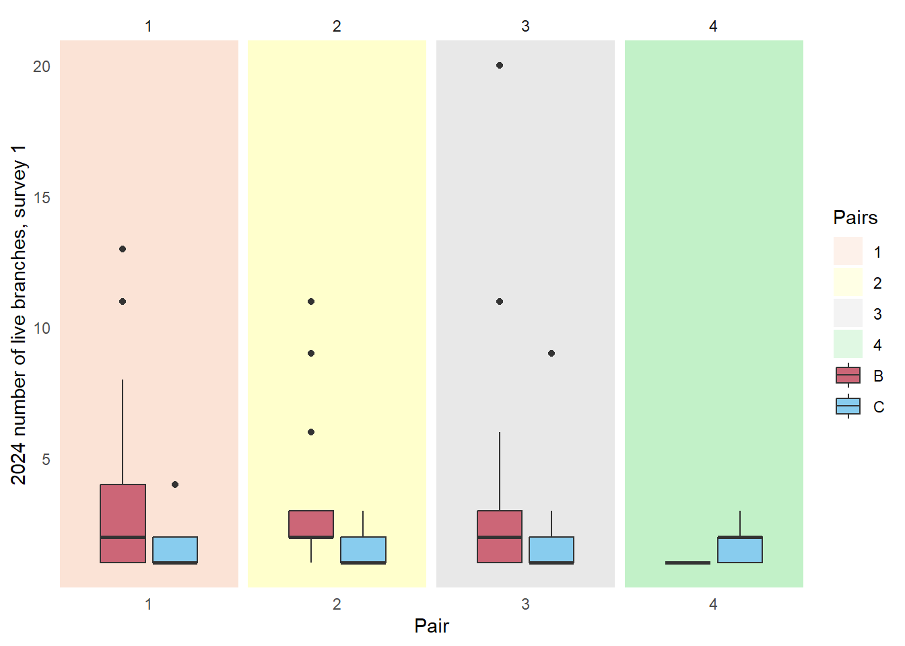
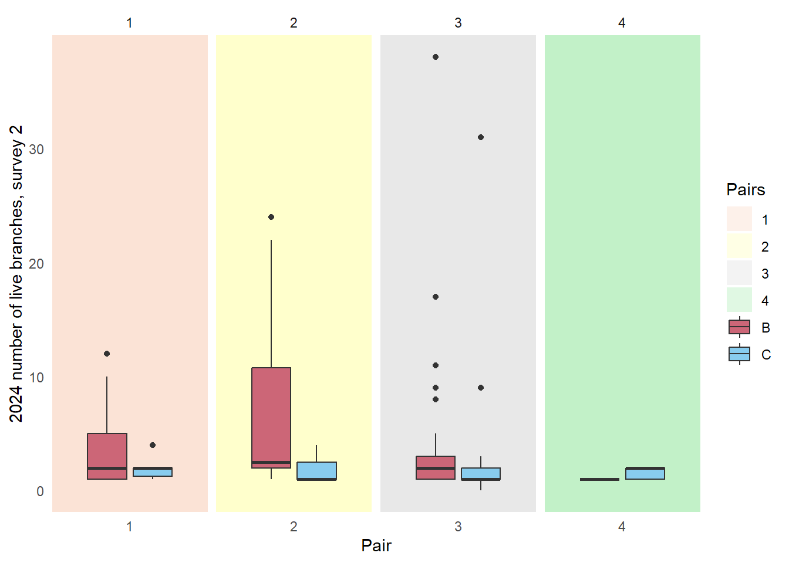
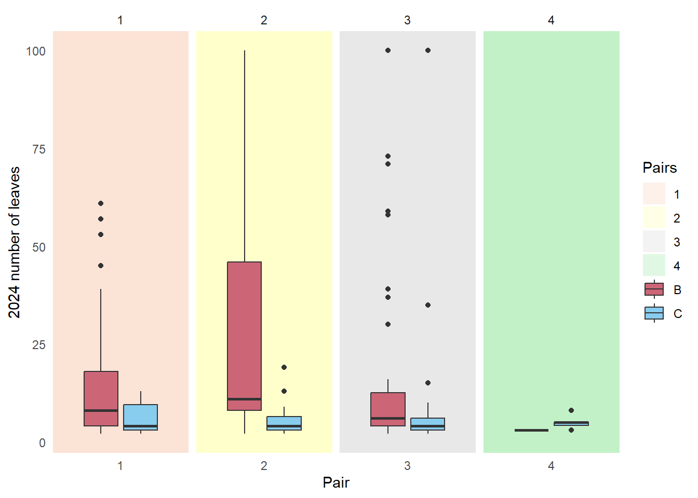
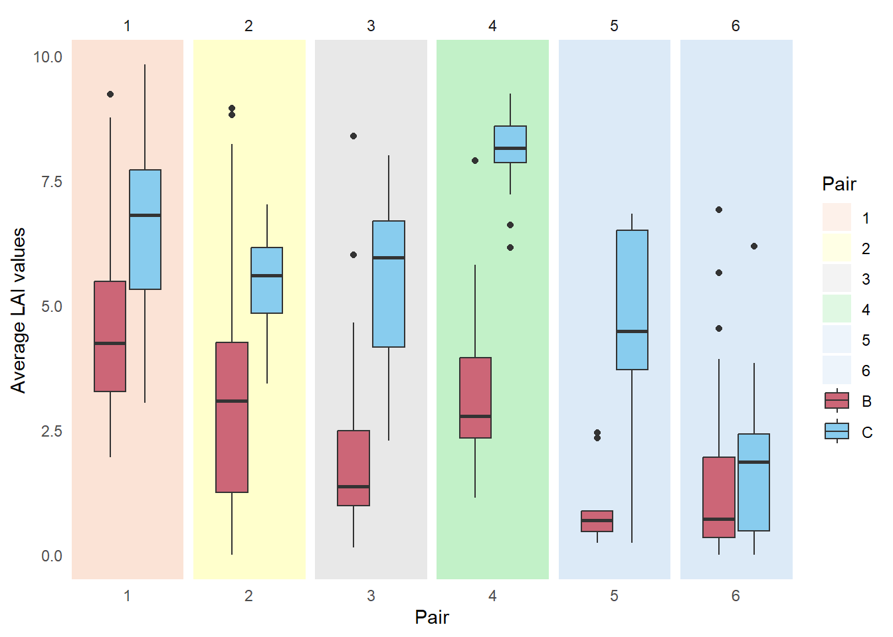

Oak at the Edge
Results
| Species code | Scientific name | Common name |
|---|---|---|
ABBA |
Abies balsamea | Balsam fir |
ACPE |
Acer pensylvanicum | Striped maple |
ACRU |
Acer rubrum | Red maple |
ACSA |
Acer saccharum | Sugar maple |
BEAL |
Betula alleghaniensis | Yellow birch |
BEPA |
Betula papyrifera | Paper birch |
BEPO |
Betula populifolia | Gray birch |
FAGR |
Fagus grandifolia | American beech |
FRAM |
Fraxinus americana | White ash |
OSVI |
Ostrya virginiana | American hophornbeam |
PIRU |
Picea rubens | Red spruce |
PIST |
Pinus strobus | White pine |
POGR |
Populus grandidentata | Bigtooth aspen |
POTR |
Populus tremuloides | Quaking aspen |
PRPE |
Prunus pensylvanica | Pin cherry |
PRSE |
Prunus serotina | Black cherry |
RUS |
Rubus spp. | Brambles genus, including raspberries and blackberries |
QURU |
Quercus rubra | Northern red oak |
TIAM |
Tilia americana | American basswood |
TSCA |
Tsuga canadensis | Eastern hemlock |
Stand characterization
Understory competition
In burned stands, Q. rubra mainly competes with early successional seedlings e.g. Rubus spp. RUS, A. rubrum ACRU, B. alleghaniensis BEAL and stump sprouts e.g. F. grandifolia FAGR.
Overstory composition
Burn stands have lower overstory basal areas than control stands. Pairs 5 and 6 stand out especially due to their clearcut treatment i.e. absence of mature trees of 20 cm and above in DBH. Their compositions are also the least diverse, consisting of Prunus (PRPE,PRSE), Populus (POGR,POTR), and Betula spp. (BEAL,BEPO,BEPA). The remaining stands have a significant presence of mature Q. rubra as well as Acer and Betula spp. of mid-ranged DBH classes. Additionally, Pair 1’s overstory composition includes a large basal area of high-DBH Pinus strobus PIST.

Oak seedling density and measurements
2023 oak seedling density
Seedling density increased threefold in burned stands (2359+/-211 per ha) relative to control stands (778+/-121 per ha, p<0.001).
| Disturbance | min | max | median | mean | sd | se |
|---|---|---|---|---|---|---|
| B | 0 | 17189 | 1146 | 2359.163 | 3045.723 | 211.183 |
| C | 0 | 12096 | 0 | 777.793 | 1637.060 | 120.686 |

2023 diameter at root collar (DRC, mm)
DRC was greater for seedlings in burned stands (4.6+/-0.3 mm) versus control stands (3.3+/-0.3 mm, p<0.01).
| Disturbance | variable | min | max | median | mean | sd | se |
|---|---|---|---|---|---|---|---|
| B | Height_cm | 5.00 | 182.00 | 13.750 | 24.314 | 25.944 | 2.349 |
| B | DRC_mm | 1.05 | 17.54 | 3.650 | 4.614 | 3.161 | 0.286 |
| B | nlive_branches | 1.00 | 18.00 | 2.000 | 3.022 | 3.119 | 0.331 |
| B | ndead_branches | 0.00 | 35.00 | 2.000 | 3.079 | 4.969 | 0.527 |
| C | Height_cm | 4.30 | 184.00 | 14.000 | 19.780 | 25.619 | 3.178 |
| C | DRC_mm | 1.12 | 17.37 | 2.875 | 3.348 | 2.297 | 0.287 |
| C | nlive_branches | 1.00 | 4.00 | 1.000 | 1.327 | 0.585 | 0.081 |
| C | ndead_branches | 0.00 | 7.00 | 1.000 | 1.385 | 1.402 | 0.194 |

2024 extension growth (cm)
Extension growth was greater for seedlings in burned stands (6.43+/-0.5 cm) versus control stand (2.6+/-0.4 cm, p<0.001).
| Disturbance | variable | min | max | median | mean | sd | se |
|---|---|---|---|---|---|---|---|
| B | Height_cm | 1.55 | 263.00 | 18.00 | 31.105 | 35.808 | 2.465 |
| B | Extension_growth_cm | 0.00 | 38.00 | 3.50 | 6.432 | 7.306 | 0.503 |
| B | DRC_mm | 0.86 | 27.58 | 3.92 | 5.170 | 3.939 | 0.271 |
| B | nlive_branches | 1.00 | 38.00 | 2.00 | 3.578 | 4.398 | 0.303 |
| B | ndead_branches | 0.00 | 37.00 | 2.00 | 3.858 | 5.983 | 0.412 |
| C | Height_cm | 6.00 | 225.00 | 15.00 | 21.414 | 29.999 | 2.773 |
| C | Extension_growth_cm | 0.00 | 40.30 | 1.60 | 2.622 | 4.190 | 0.387 |
| C | DRC_mm | 1.44 | 22.55 | 2.85 | 3.530 | 2.937 | 0.272 |
| C | nlive_branches | 0.00 | 31.00 | 1.00 | 1.880 | 2.986 | 0.276 |
| C | ndead_branches | 0.00 | 25.00 | 2.00 | 2.410 | 3.265 | 0.302 |

2024 number of live branches
There were more live branches per seedling in the burned stands than the control stands, respectively 4+/-0 and 2+/-0 (p<0.001).


2024 number of leaves
Seedlings in burned stands sprouted more leaves (16+/-1) than in control stands (7+/-1, p<0.001).

Leaf Area Index (LAI)
Burned stands have lower LAI values (averaging 3.2+/-0.2) than control stands (5.4+/-0.2, p<0.001).
| Disturbance | min | max | median | mean | sd | se |
|---|---|---|---|---|---|---|
| B | 0 | 9.233 | 2.928 | 3.159 | 2.136 | 0.150 |
| C | 0 | 9.825 | 5.915 | 5.400 | 2.347 | 0.176 |

Citations
R packages
[1] F. Aust. citr: RStudio Add-in to Insert Markdown Citations. R package version 0.3.2. 2019. https://github.com/crsh/citr.
[2] C. Boettiger. knitcitations: Citations for Knitr Markdown Files. R package version 1.0.12. 2021. https://github.com/cboettig/knitcitations.
[3] W. Chang, J. Cheng, J. Allaire, et al. shiny: Web Application Framework for R. R package version 1.9.1. 2024. https://CRAN.R-project.org/package=shiny.
[4] G. Grolemund and H. Wickham. “Dates and Times Made Easy with lubridate”. In: Journal of Statistical Software 40.3 (2011), pp. 1-25. https://www.jstatsoft.org/v40/i03/.
[5] K. Müller and H. Wickham. tibble: Simple Data Frames. R package version 3.2.1. 2023. https://CRAN.R-project.org/package=tibble.
[6] R Core Team. R: A Language and Environment for Statistical Computing. R Foundation for Statistical Computing. Vienna, Austria, 2022. https://www.R-project.org/.
[7] V. Spinu, G. Grolemund, and H. Wickham. lubridate: Make Dealing with Dates a Little Easier. R package version 1.9.3. 2023. https://CRAN.R-project.org/package=lubridate.
[8] H. Wickham. forcats: Tools for Working with Categorical Variables (Factors). R package version 1.0.0. 2023. https://CRAN.R-project.org/package=forcats.
[9] H. Wickham. ggplot2: Elegant Graphics for Data Analysis. Springer-Verlag New York, 2016. ISBN: 978-3-319-24277-4. https://ggplot2.tidyverse.org.
[10] H. Wickham. stringr: Simple, Consistent Wrappers for Common String Operations. R package version 1.5.1. 2023. https://CRAN.R-project.org/package=stringr.
[11] H. Wickham. tidyverse: Easily Install and Load the Tidyverse. R package version 2.0.0. 2023. https://CRAN.R-project.org/package=tidyverse.
[12] H. Wickham, M. Averick, J. Bryan, et al. “Welcome to the tidyverse”. In: Journal of Open Source Software 4.43 (2019), p. 1686. DOI: 10.21105/joss.01686.
[13] H. Wickham, W. Chang, L. Henry, et al. ggplot2: Create Elegant Data Visualisations Using the Grammar of Graphics. R package version 3.5.1. 2024. https://CRAN.R-project.org/package=ggplot2.
[14] H. Wickham, R. François, L. Henry, et al. dplyr: A Grammar of Data Manipulation. R package version 1.1.4. 2023. https://CRAN.R-project.org/package=dplyr.
[15] H. Wickham and L. Henry. purrr: Functional Programming Tools. R package version 1.0.2. 2023. https://CRAN.R-project.org/package=purrr.
[16] H. Wickham, J. Hester, and J. Bryan. readr: Read Rectangular Text Data. R package version 2.1.5. 2024. https://CRAN.R-project.org/package=readr.
[17] H. Wickham, D. Vaughan, and M. Girlich. tidyr: Tidy Messy Data. R package version 1.3.1. 2024. https://CRAN.R-project.org/package=tidyr.
[18] Y. Xie. Dynamic Documents with R and knitr. 2nd. ISBN 978-1498716963. Boca Raton, Florida: Chapman and Hall/CRC, 2015. https://yihui.org/knitr/.
[19] Y. Xie. “knitr: A Comprehensive Tool for Reproducible Research in R”. In: Implementing Reproducible Computational Research. Ed. by V. Stodden, F. Leisch and R. D. Peng. ISBN 978-1466561595. Chapman and Hall/CRC, 2014.
[20] Y. Xie. knitr: A General-Purpose Package for Dynamic Report Generation in R. R package version 1.42. 2023. https://yihui.org/knitr/.
[21] Y. Xie. “TinyTeX: A lightweight, cross-platform, and easy-to-maintain LaTeX distribution based on TeX Live”. In: TUGboat 40.1 (2019), pp. 30-32. https://tug.org/TUGboat/Contents/contents40-1.html.
[22] Y. Xie. tinytex: Helper Functions to Install and Maintain TeX Live, and Compile LaTeX Documents. R package version 0.53. 2024. https://github.com/rstudio/tinytex.